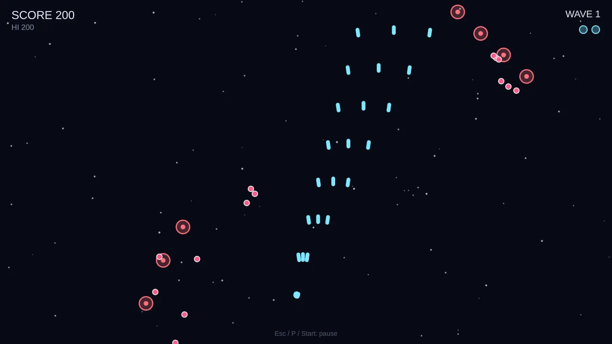

Cuervo Engine
2D Game Engine & Scripting Language
Cuervo Engine is a 2D, vector-first, deterministic game engine written in C++20. Games are scripted in Pluma, the engine's own statically typed language, which runs on a custom VM and can also be compiled ahead of time to C. Because the simulation is deterministic, a game plays out identically every time from the same inputs, which makes replays and cross-platform verification possible.
The renderer has Vulkan and OpenGL / OpenGL ES / WebGL2 backends kept in verified parity, and the engine includes particles, collision, audio, UI widgets, scene files, replays, an editor, and an exporter that packages games for Linux, Windows and the web.
The demo above is Starfall, a shoot-'em-up written entirely in Pluma, running in your browser through the engine's WebAssembly build.
Highlights
- C++20 engine with Vulkan and OpenGL / WebGL2 render backends
- Pluma: a custom statically typed scripting language with a VM, ahead-of-time compilation to C, hot reload and a VS Code extension
- Deterministic simulation, so replays and results match across platforms and backends
- Editor, exporter and CI-built releases for Linux, Windows and the web
- Open source under the MIT license
